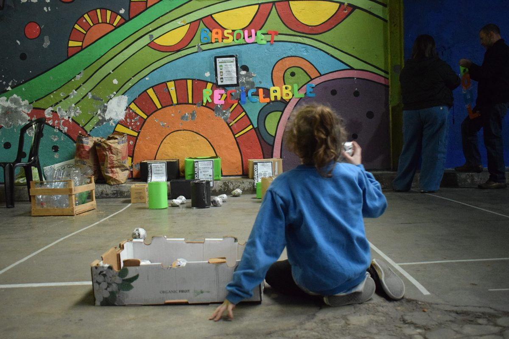

Educación ambiental
Una comunidad sostenible
Queremos sembrar conciencia ecológica en los espacios sociales, deportivos y culturales.
Queremos sembrar conciencia ecológica
Entendemos la sostenibilidad como un proceso que busca satisfacer las necesidades actuales sin comprometer los recursos y condiciones de vida de las generaciones futuras.
Buscamos activamente impulsar acciones concretas que minimicen el impacto ambiental y nos ayuden a fomentar el cuidado de nuestra casa común.
De la palabra a la acción
- Reutilizar y reciclar responsablemente los materiales
- Reducir residuos en nuestras actividades
- Repensamos, eligiendo insumos y proveedores sostenibles
- Incorporamos la educación ambiental en nuestras actividades
- Fomentamos hábitos conscientes y responsables